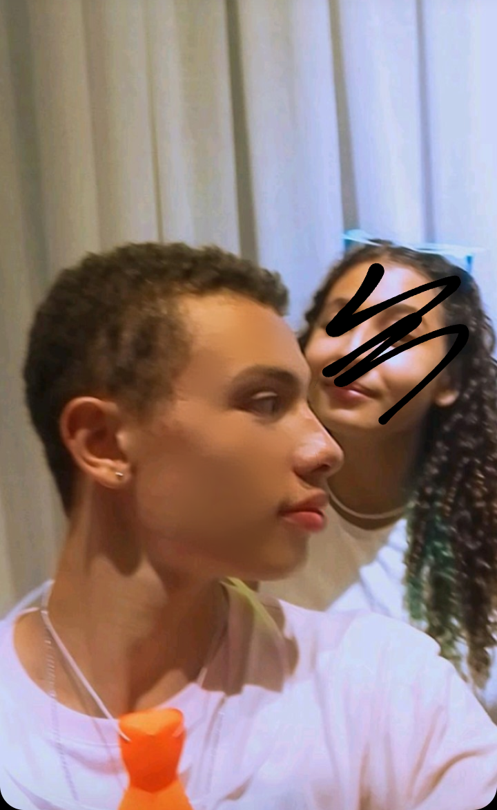
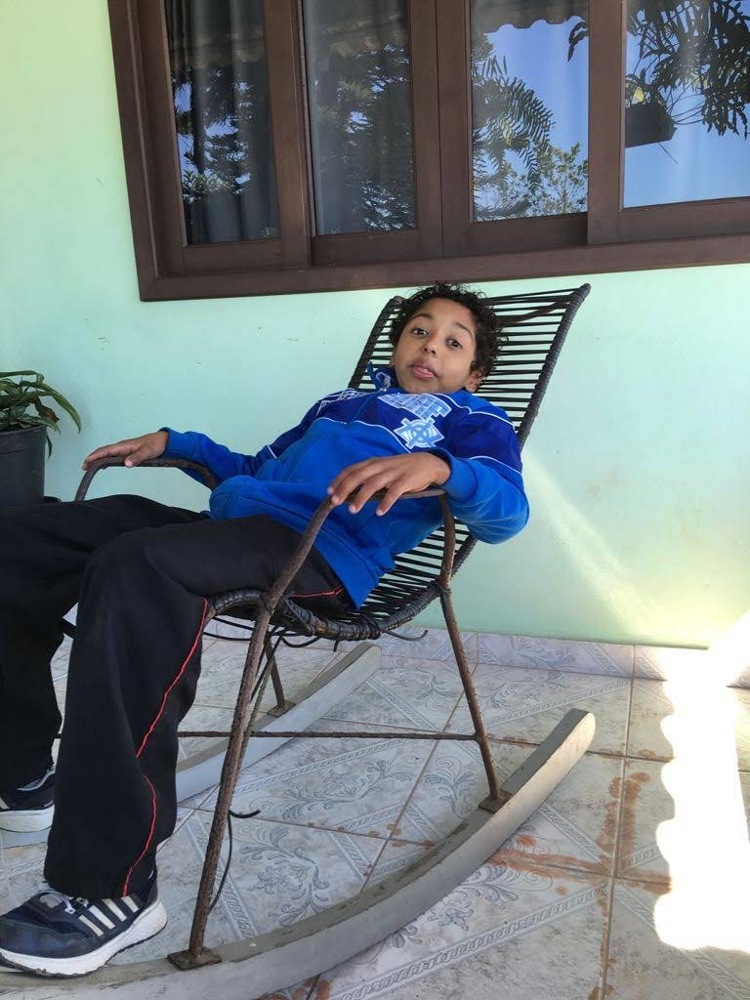
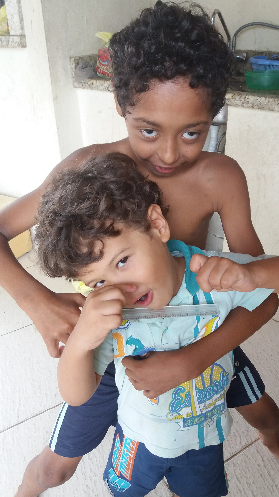
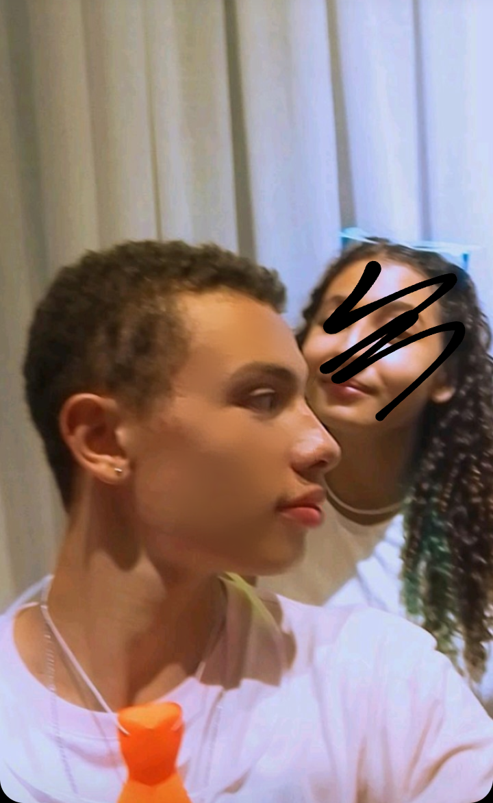
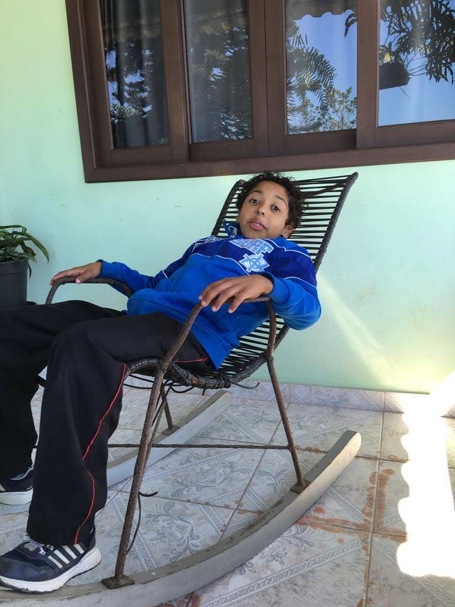
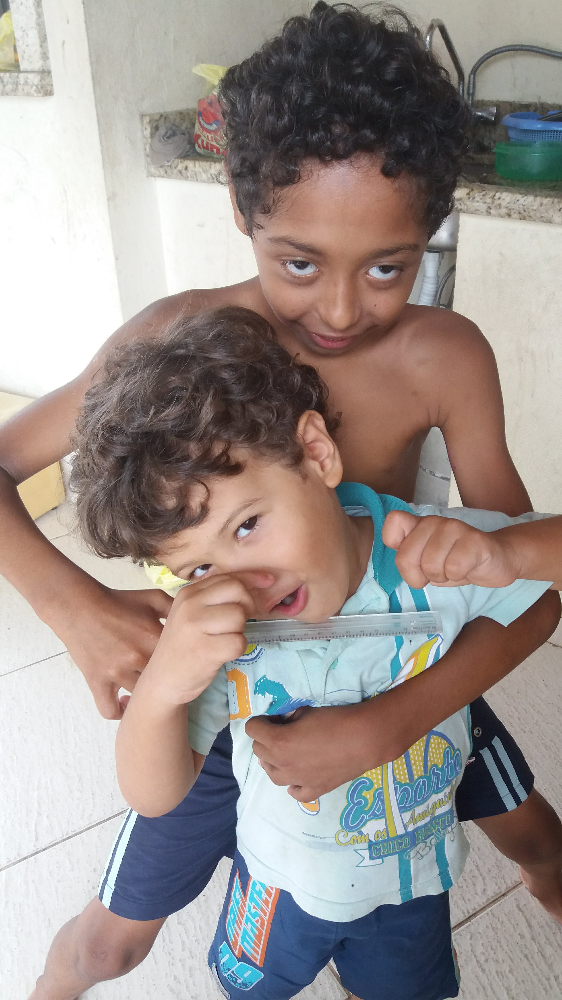
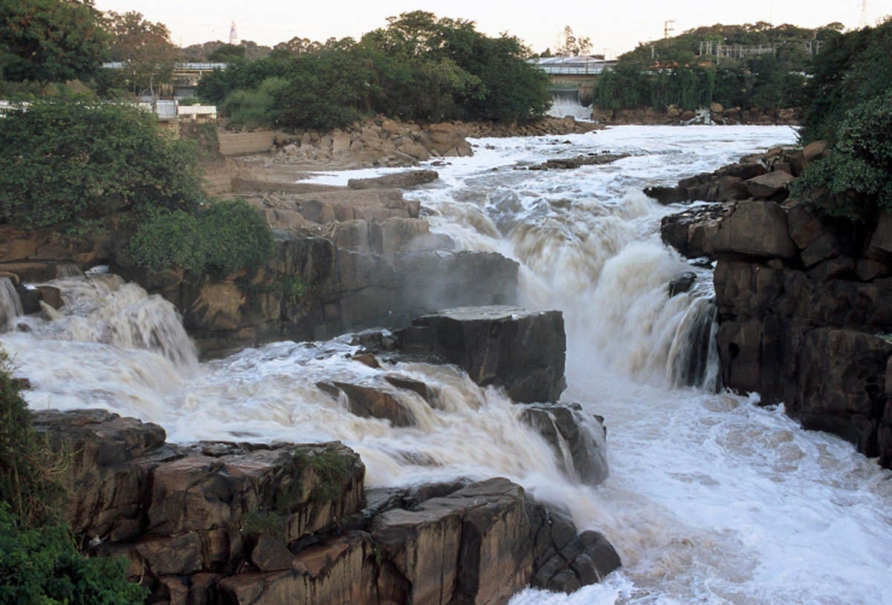
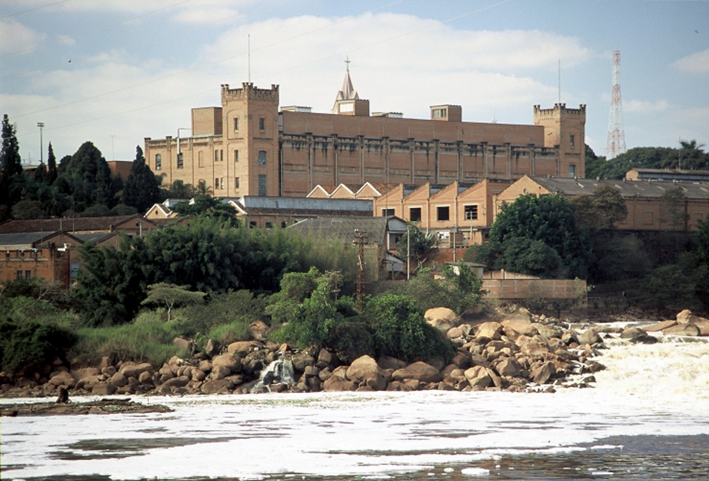
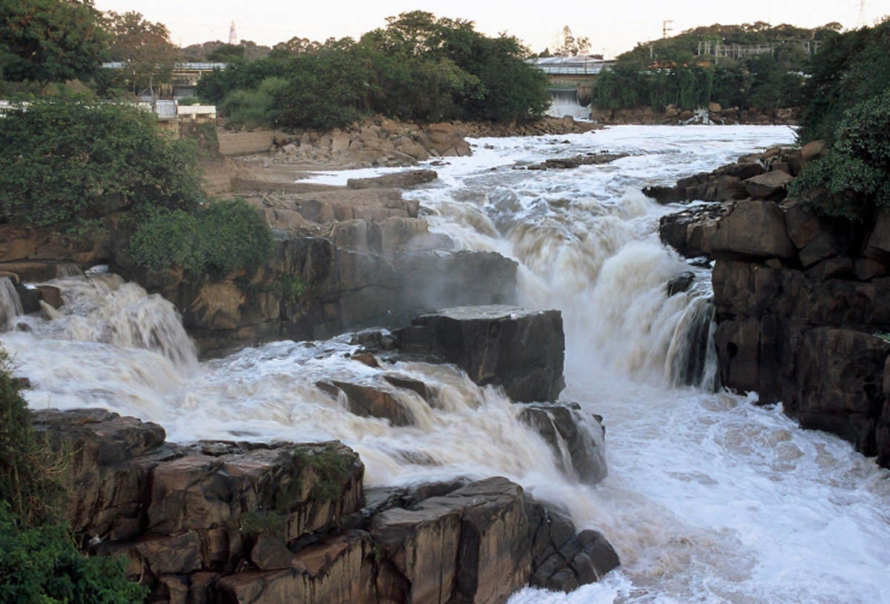
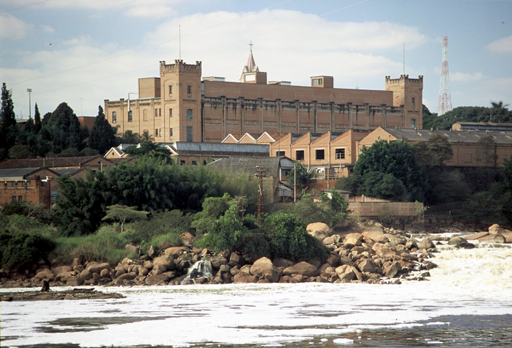

Como já mencionado meu nome é Julia Alves de Oliveira, estudo no Instituto Federal Catarinense(IFC),e atualmente
estou cursando informática na turma 1info3.
Nasci dia 26/09/2006,na cidade de Salto-SP e hoje tenho 15 anos.
Minha família é formada por sete pessoas , sendo meus pais 2 irmãos mais velhos e 2 mais novos
,equivalendo 2 meninas e 3 meninos(todos do mesmo pai).Moro no bairro Vila Nova da cidade de Joinville-SC.
Gosto de praticar várias atividades ao dia ,evitando o máximo ficar obcecada no celular no meu quarto, entre
elas, executar meus hobbies
Família:
 





São Paulo:
 


